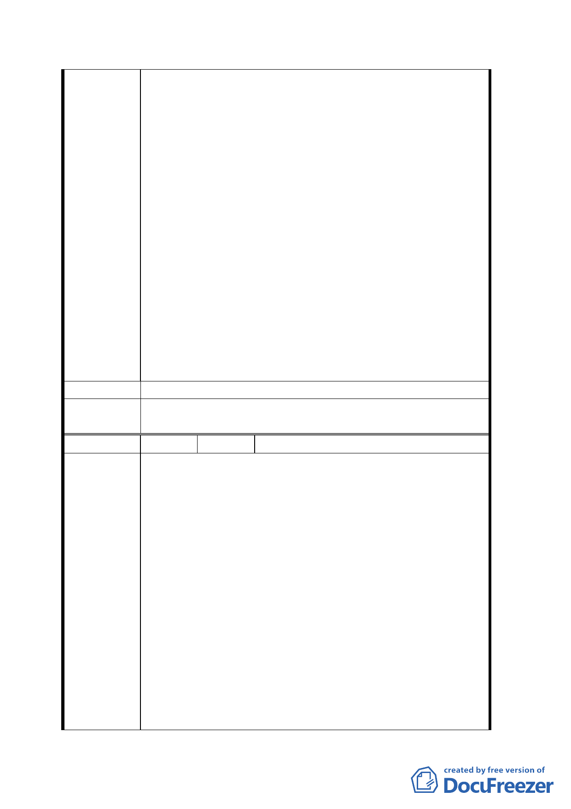

二、請協調國有財產局，同意標售地上權，開國際
標地上權標售所得在扣除地上物補償後繳入國庫及
市庫。都市計畫委員會放寬法令及獎勵投資，主導
及協助令案法令及問題。市政府國宅處以優惠價格
賣國宅給現住戶。其生計問題由投資者所興建之攤
位，店舖優先讓售住戶以解決其生計。
三、由國際聯合的標之公司，應參酌都市計畫委員
會之建議及要求規劃興建具備廣場及公園化之大型
建築，可以解決「廣場問題」又可更新市容，又能
平衡東西發展。
四、理教公所古蹟遺址問題也可同時在規劃興建案
中解決。
五、請不要開倒車，仍為商四乃至更高度之土地利
用甚至聯合對街之國軍英雄館周圍土地併案規劃標
售地上權。〈地上物補償案可自標售價中扣除可省市
府預算〉。
六、至少應將貴陽街一排土地劃分切割出來，使其
權益有保障。
建 議 辦 法 同陳情理由。
委員會決
議
同決議一、二。
編 號 14 陳情人 陳永政
陳情位置：西寧南路二六一號（漢中段二小段 138、
138-1、139 地號）上述地號係私有土地，早在光復
前就居住買地在此做生意，住家後面有部分土地是
國有地，我們早在 20 多年就屢次向國有申請購買均
未能。但在 60 年左右卻賣鄰地違章地，現正蓋大樓
中，約 14 層高，請查證。
西寧南路二六一至二六三號（漢中段二小段 138、
陳情理由
138-1、139、137、137-0001、132、133 地號）
1. 西寧南路 261 號居民在政府還未接手台灣時，早
在日據時代已購買土地並設籍在此，面積持有
43 平方公尺，是獨立地號，完全不屬國有土地
同一棟的建築物，請派員勘查，實際上是面臨寬
有 12.73 的西寧南路上的商店，唯一美中不足的
是房屋後段約有 27.4 平方公尺是日據時代無知
未登記為己有，卻被劃為國有。
2. 國有財產局體諒彌補百姓的損失，在民國 89 年
一七